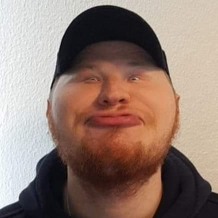
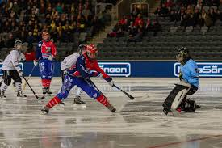

Vem är Simon?
 När jag var liten var jag alltid den för sociala personen. Som ett exempel kunde jag skaffa nya vänner i kön
på Ica.
Jag blev ganska tidigt intresserad utav datorer tack vare familjevännernas far som brände Starcraft och DOOM
till mig för att spela. Detta fick in mig i spel världen.
Jag var tvungen att spela med min far då DOOM var ett väldigt läskigt spel för en yngre pojk. Och ja jag pratar
om DOOM som kom ut 1993.
Efter gymnasiet kände jag att jag ville utbilda mig till bartender, vilket jag gjorde i Spanien, Barcelona.
Detta yrke höll jag på med i ca 2 år.
Jag tappade aldrig mitt intresse för datorer och IT. Jag kände tillslut att jag var klar med bartending och
valde att jobba som IT-support. Jag arbetade som IT-support och studerade komvux på sidan. Det var efter detta
arbete som jag bestämde mig att studera vidare inom IT.
Intressen
Tidigt startade mitt intresse för träning. Detta började med att jag som liten pojk började spela bandy då jag
var 5 år gammal. Jag spelade bandy tills jag var 16-17 år. Jag spelade i laget SBBK i Stockholm, där vi spelade
i A-laget på slutet av min bandy "karriär".

Efter min "karriär" inom bandyn, så påbörjade mitt intresse för styrketräning. Som jag har hållt på med ett par
år fram och tillbaka.
Jag är också intresserad utav att spela gitarr och musik i allmänt. Jag må inte vara utbildad musiker men jag
uppskattar musik i min dagliga vardag. Den musik genre som jag lyssnar på mest är Metal och bandet jag lyssnar
mest på för tillfället är Bring Me The Horizon.

Jag är även intresserad utav att träffa nya människor, då jag vet att man kan alltid lära sig något utav en ny
människa. Den första interaktionen brukar vara den roligaste delen. Detta gäller nog mer ett intresse för
kommunikation. Hur jag som person kan kommunicera med människor på bästa sätt.
Som ni kanske har märkt har jag även ett intresse fär tatueringar. Detta intresse startade långt innan jag var
myndig. Jag hade tjatat på mina föräldrar att dem skulle betala min första i evigheter. Sedan den första dagen
av mina tateringar har jag alltid velat ha mer och skapar planer för hela kroppen.